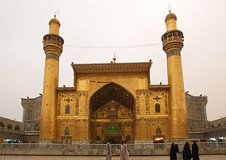
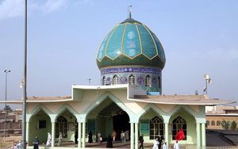
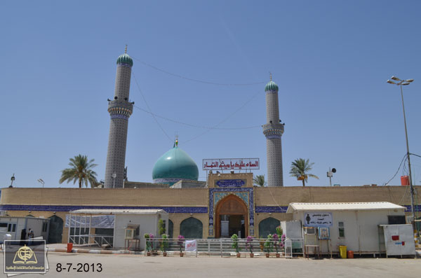

العتبة العلوية
الروضة الحيدرية أو ضريح الإمام علي أو حضرة علي هو مرقد ديني يقع في مدينة النجف في العراق حيث تقول مصادر عديدة - غالبيتها تعود للمؤرخين المسلمين الشيعة- أنه تم تشيّيده على قبر علي بن أبي طالب، رابع من تولّى خلافة المسلمين بعد النبي محمد، وأول أئمة الشيعة. المزيد
مسجد الكوفة المعظم
مسجد الكوفة المعظم أو المسجد الأعظم في العراق يعتبر من مساجد العراق الأثرية والتاريخية وهو من أقدم المساجد في العالم الإسلامي، ولقد بنى المسجد الصحابي سعد بن أبي وقاص في عام 19هـ/739م ليكون أول مبنى في مدينة الكوفة التي تحولت فيما بعد إلى كبرى الحواضر الإسلامية ومقر خلافة الإمام علي بن أبي طالب. المزيد
.jpg)
مسجد السهلة المعظم
أحد أكبر المساجد التي شُيّدت في الكوفة خلال القرن الهجري الأوّل، وما زال أثرها وذِكْرها خالداً إلى الآن. ويبدو أنّ بني ظفر هم بُناة المسجد الحقيقيّون، وهؤلاء بطنٌ من الأنصار نزلوا الكوفة؛ ولهذا عُرِف المسجد أوّلَ الأمر بمسجد بني ظفر، ثمّ إنّ المسجد عُرِف بـ «مسجد السَّهْلة»، وهي التسمية المتداولة حاليّاً. المزيد
.jpg)
مرقد الصحابي الجليل كميل بن زياد
كُمَيْل بن زياد النُّخعي الكوفي، ولد باليمن سنة سبع قبل الهجرة. أسلم صغيراً وأدرك النبي، وقيل أنه لـم يره، ارتحل مع قبيلته إلى الكوفة في بدء انتشار الإسلام، كان من سادات قومه، وله مكانة ومنـزلة عظيمة عندهم المزيد
الصحابي الجليل ميثم التمار
ميثم بن يحيى التمّار الأسديّ الكوفيّ يكنى بـ أبو سالم.من خواصّ صحابة علي بن أبي طالب، وكان يبيع التمر في الكوفة؛ لذا لقّب بـالتمّار. كان ميثم من المقرّبين من علي بن أبي طالب؛ لذا فقد خصّه بعلم البلايا والمنايا، كما أنّه من أصحاب الحسن و الحسين المزيد
مسجد الحنانة
مسجد الحنانة وهو من مساجد مدينة النجف الأشرف التي يقصدها المجاورون والزائرون، فهو أحد الاماكن الثلاثة التي صلى فيها الامام جعفر الصادق. وهو موضع رأس الامام الحسين ويعرف قديما بالعلم كما في مصباح الزائر لابن طاووس المزيد